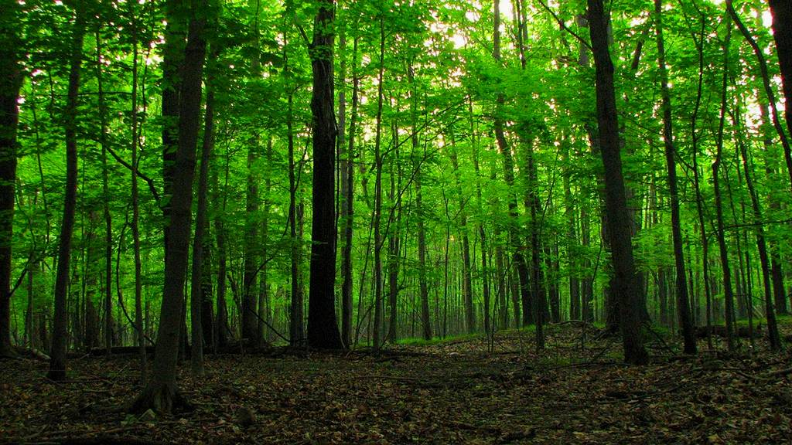

Um dia desses, dentro de um livro da biblioteca da escola, descobri uma carta antiga sobre uma cidade perdida, escondida por riquezas e belezas naturais. Nessa carta, a autora deixa algumas pistas para encontrar essa cidade e eu decidi segui-las!
Você começa sua jornada no Rio de janeiro, subindo o pico da tijuca ao amanhecer para encontrar a primeira pista.
passo 2 passo 2 passo 2